Snakes of Syria
33 living snake species are recorded in Syria in SnakeList: 9 venomous and 24 non-venomous, from 7 families.
- 33living species
- 7families
Danger to people · tap a number to show only those snakes
- 0giant constrictors
Harmful = dangerously venomous + giant constrictors. Harmless = not venomous and not a giant constrictor. Mildly venomous snakes have no serious bites to people documented. Any snake can bite.
These totals count the unique living snake species SnakeList records in Syria. A species counts if it is recorded anywhere in the country, so not every snake lives in every part of it.
In SnakeList’s checklist filters
How many of the 33 living species here each filter in the SnakeList app picks out – tap a number to show only those snakes.
Snake family5 types, 7 families
Type
Family
Habitats14 habitat groups
Habitats are estimated from where each snake is recorded and what kind of snake it is, as in the app; a snake can count in several.
Characteristics9 venomous, 2 constrictors
Constrictor and Non-constrictor count only snakes whose family or genus is documented as constricting or not; the rest are not documented.
Other filters0 popular, 8 rare
- 0popular
- 0invasive
- 0extinct
Species
Showing 33 species
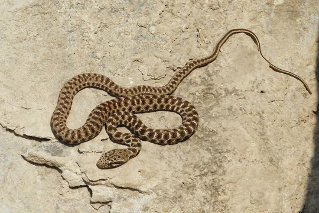
Asian RacerHemorrhois nummifer Awl-headed SnakeLytorhynchus diadema
Awl-headed SnakeLytorhynchus diadema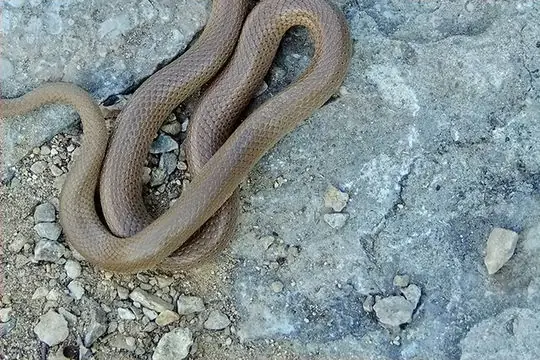
Baran Dwarf RacerEirenis barani Black-headed Snake (nigriceps)Telescopus nigriceps
Black-headed Snake (nigriceps)Telescopus nigriceps Cat SnakeTelescopus fallax
Cat SnakeTelescopus fallax Crowned Dwarf RacerEirenis coronella
Crowned Dwarf RacerEirenis coronella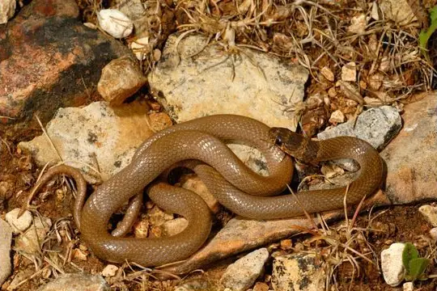
Eiselt's Dwarf RacerEirenis eiselti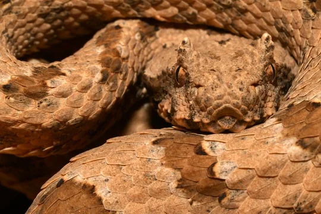
Field's Horned ViperPseudocerastes fieldi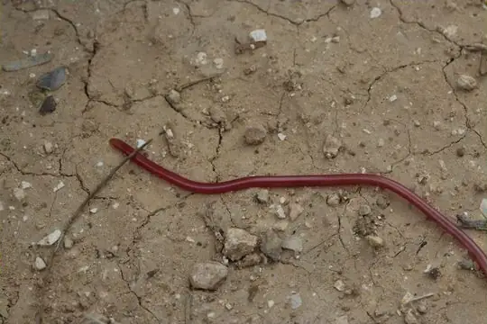
Israeli Worm SnakeLetheobia simoni- No photo yetKennedy's Leafnose SnakeLytorhynchus kennedyi
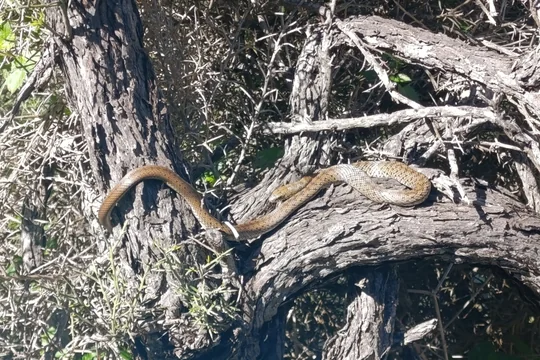
Large Whip Snake (jugularis)Dolichophis jugularis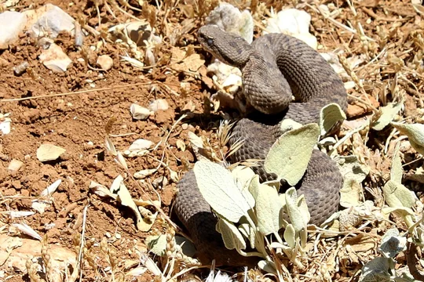
Lebanon ViperMontivipera bornmuelleri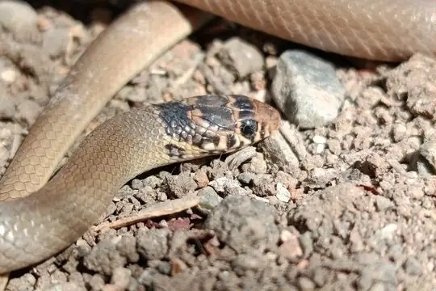
Levantine Dwarf SnakeEirenis levantinus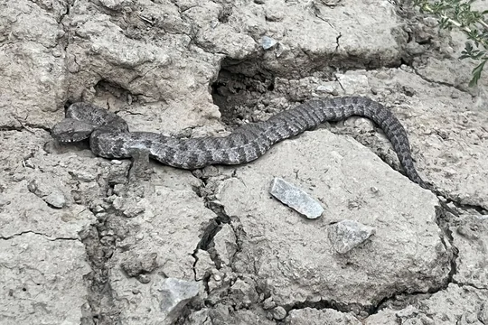
Levantine ViperMacrovipera lebetinus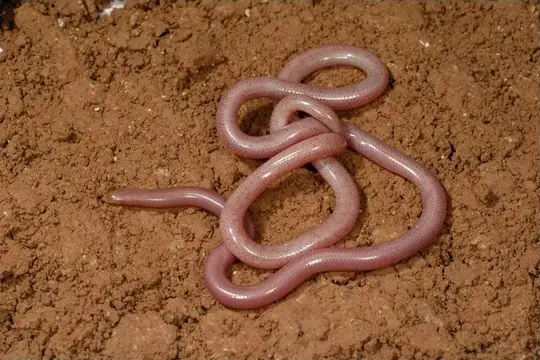
Long-nosed Worm SnakeLetheobia episcopus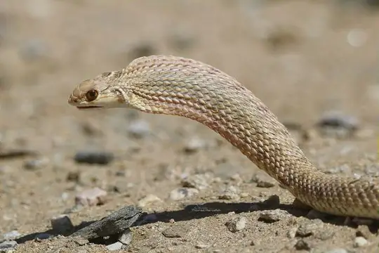
Moila SnakeMalpolon moilensis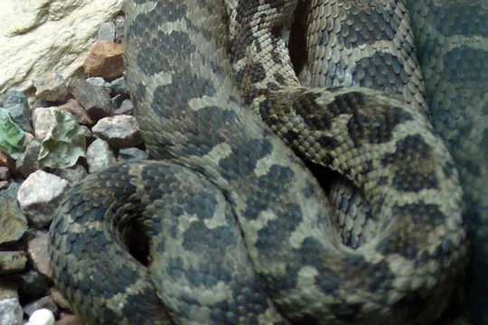
Mount Bulgar ViperMontivipera bulgardaghica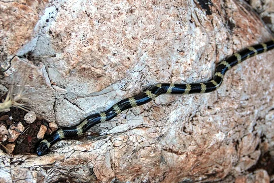
Muller's Snake (muelleri)Micrelaps muelleri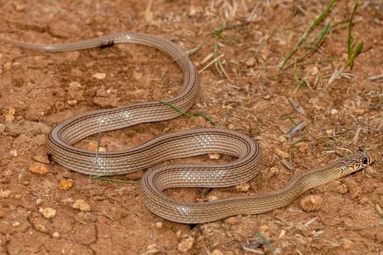
Narrow-striped Dwarf SnakeEirenis decemlineatus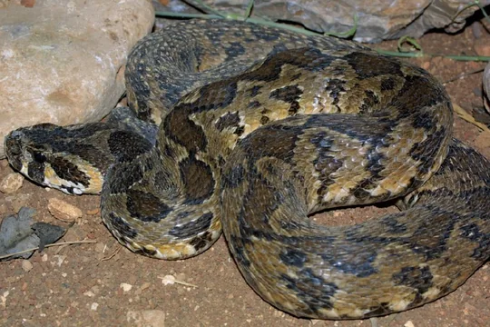
Palestine ViperDaboia palaestinae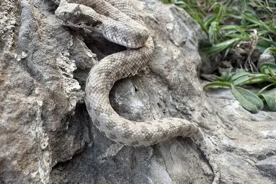
Persian Horned ViperPseudocerastes persicus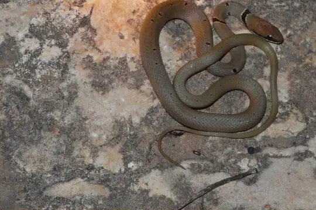
Red Whip Snake (collaris)Platyceps collaris Red-Bellied RacerDolichophis schmidti
Red-Bellied RacerDolichophis schmidti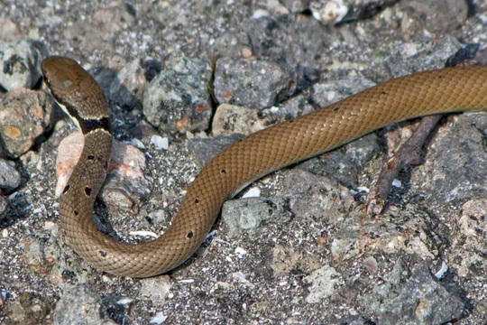
Red-headed Whip-snakeColuber rubriceps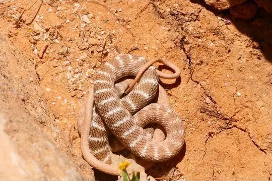
Rogers' RacerPlatyceps rogersi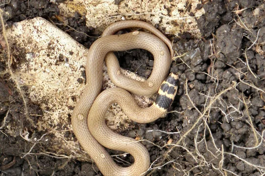
Roth's Dwarf SnakeEirenis rothii Sand Boa (jaculus)Eryx jaculus
Sand Boa (jaculus)Eryx jaculus- No photo yetSinai Dwarf RacerEirenis coronelloides
 Spotted Whip SnakeHemorrhois ravergieri
Spotted Whip SnakeHemorrhois ravergieri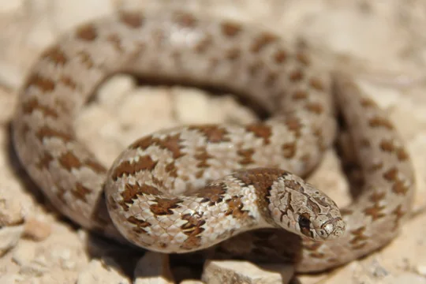
Striped Dwarf SnakeEirenis lineomaculatus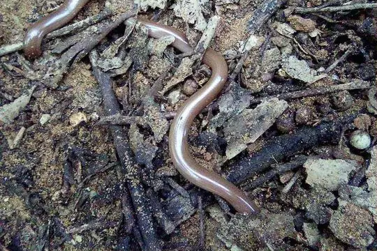
Syrian Blind SnakeXerotyphlops syriacus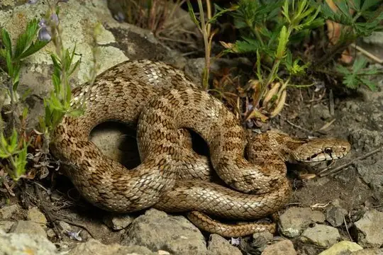
Transcaucasian Rat SnakeZamenis hohenackeri- No photo yetWalterinnesia morgani
No snakes in Syria match.
Syria’s snakes in numbers
- Families: Colubridae 20, Viperidae 6, Typhlopidae 3, Atractaspididae 1, Boidae 1, Elapidae 1, Psammophiidae 1.
How precisely they are recorded
Of the 33 living species recorded in Syria, 10 are recorded by governorate in SnakeList’s data; 23 are recorded only for Syria as a whole, so the governorate pages list them as possible rather than recorded. SnakeList records each species by governorate, not by exact spot, so a species listed for a governorate may live in only part of it.
Governorates
The governorates where SnakeList records snakes, with how many living species are recorded in each. Each page has its species, venomous snakes, families, the species found only there, its cities and neighbours.
- As-Suwayda 2 species
- Daraa 1 species
- Latakia 5 species
- Rif Dimashq 1 species
- Tartus 3 species
No place matches that.
Cities
Its biggest cities, biggest first. SnakeList records snakes by governorate, not by city, so each city page shows the species recorded in its governorate and, separately, those only possible there - not species confirmed in the city.
- Latakia Latakia Governorate
No place matches that.